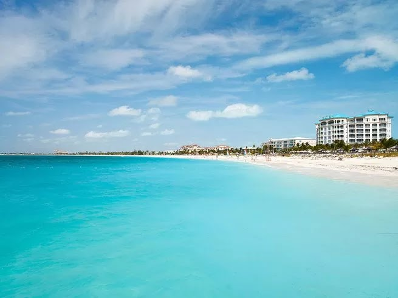

Grace Bay Beach, Providenciales, Turks and Caicos
If you want your field of vision go full IMAX, this is the spot. Yes, Turks and Caicos’ most famous beach is lined from end to end with resorts, but the “ahh” moment that occurs every time you gaze out at Grace Bay Beach’s dazzling white sand (it’s talcum-soft, too) and clear aquamarine water is a natural sedative. And the upscale ambience, beachfront pools, soothing spas and casual beach bars have a vibe that’s equally right for romance or family time.